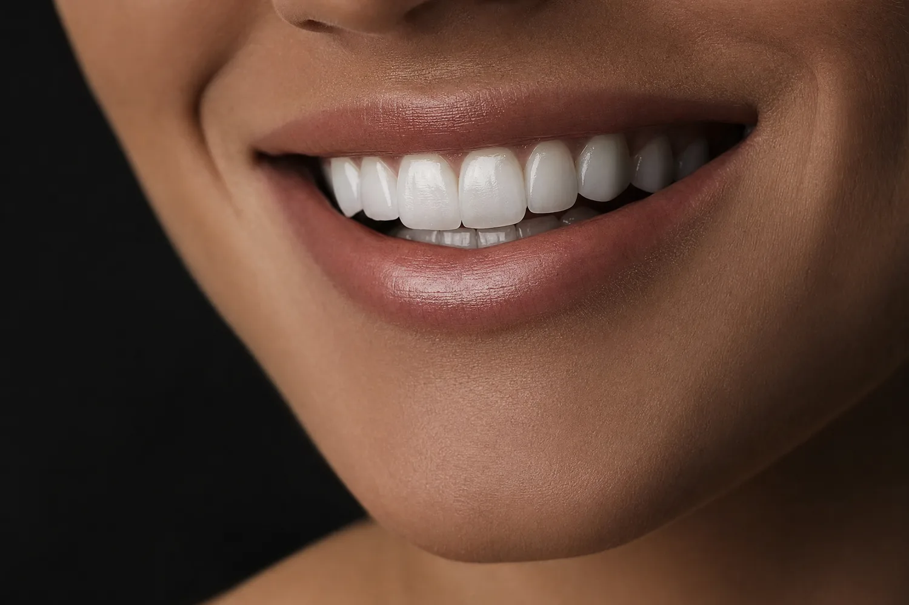
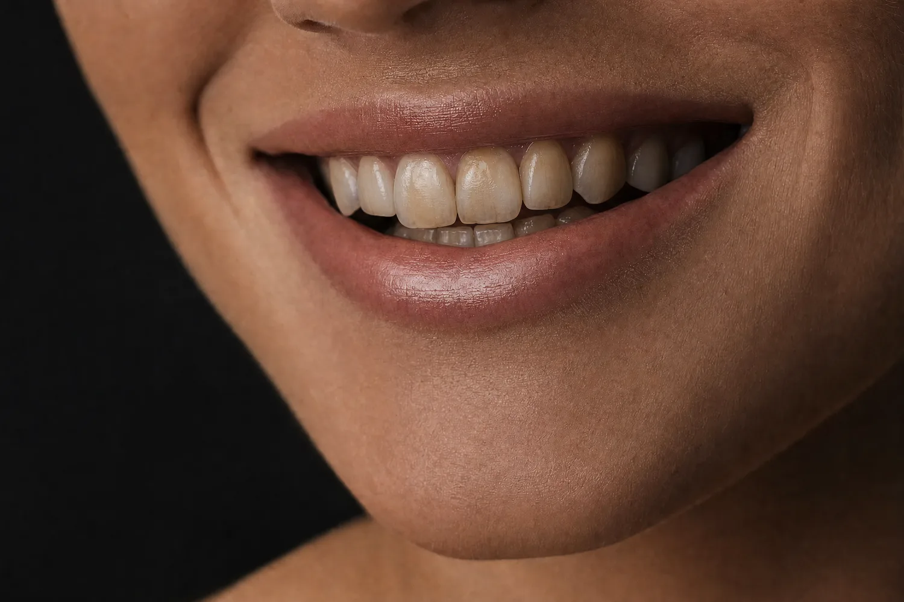
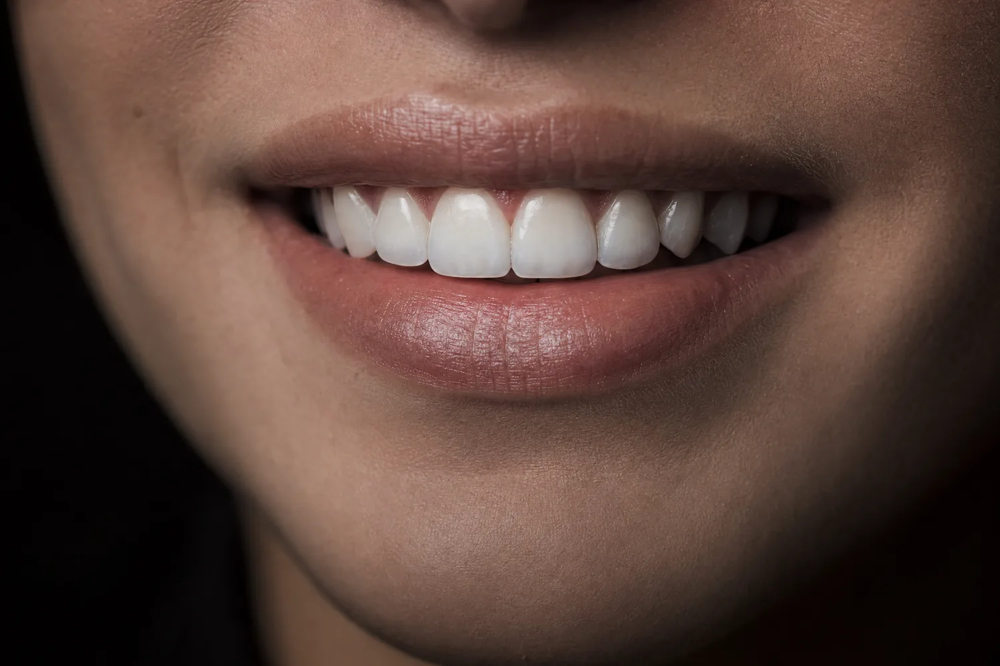
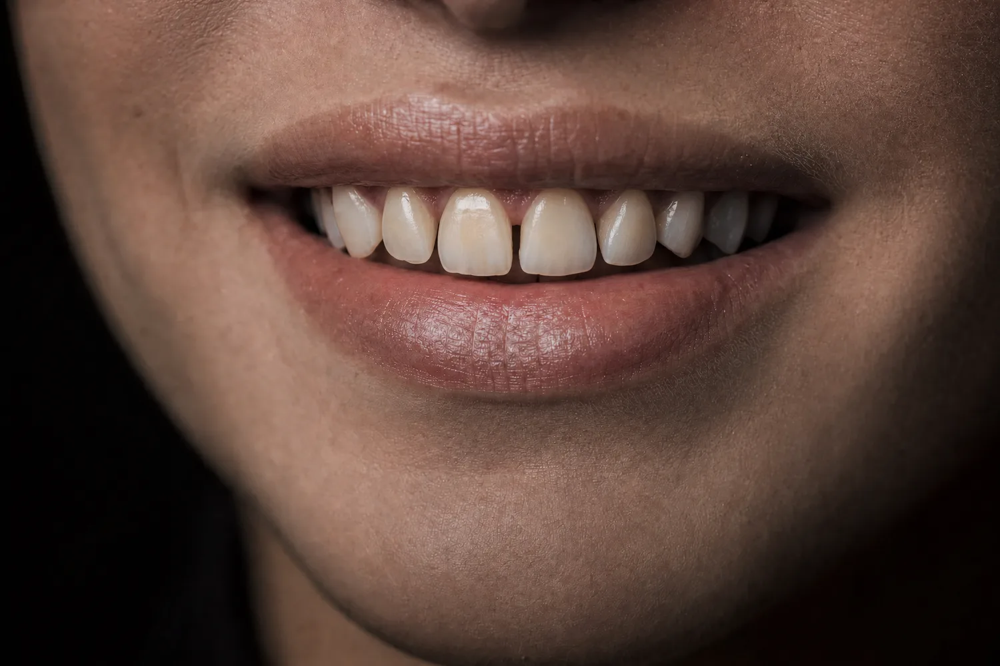
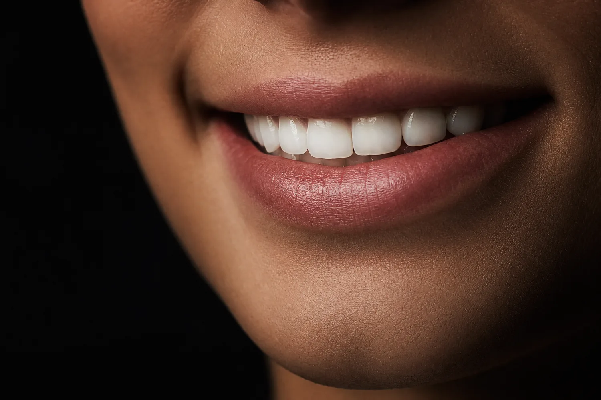
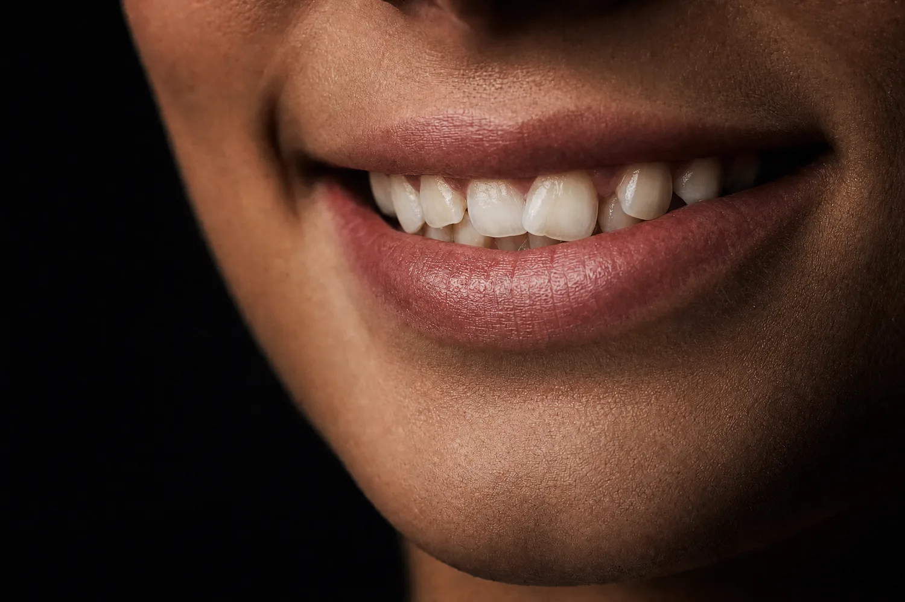
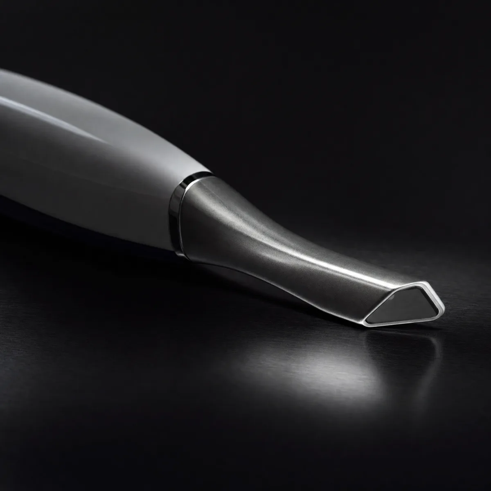
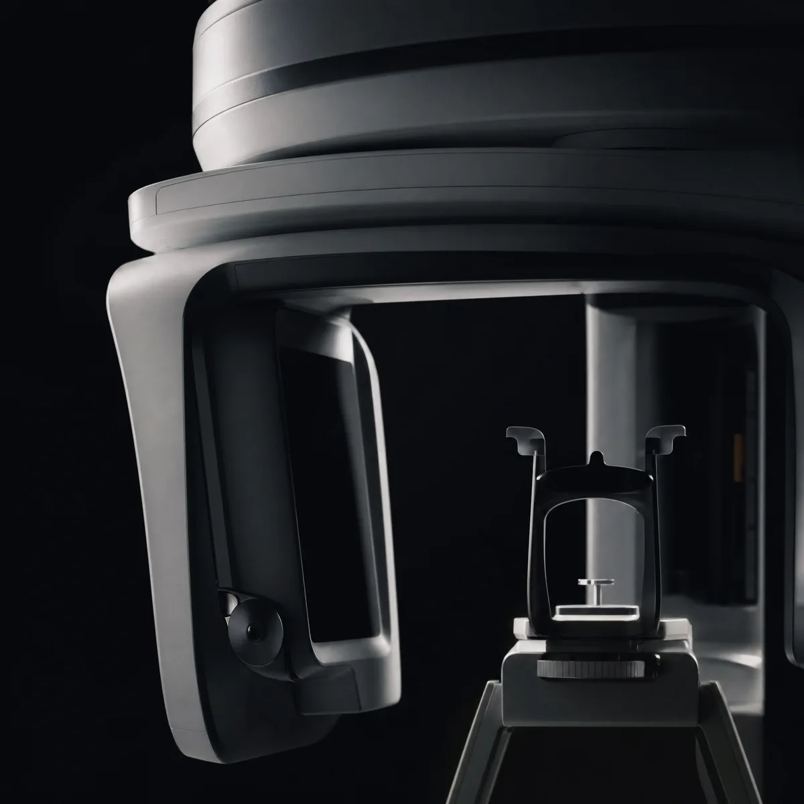
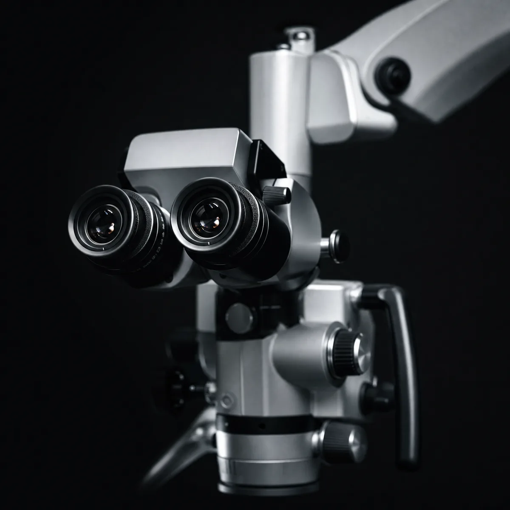

대표원장
김도현
수면치료 · 턱관절 · 보톡스
서울대학교 치과대학 졸업 · 대한구강악안면임플란트학회 정회원 · 수면·턱관절 진료
“충분히 듣고, 이해하실 수 있게 설명합니다.”
본 페이지는 디자인 초안입니다. 원장 성함·주소·사진 등은 확정 후 반영되며, 의료광고 표현은 사전 검수 후 게시됩니다.
좋은 진료는 결과만이 아니라 경험까지 이어진다고 생각합니다. 검진 한 번에도 다름이 느껴지는 치과를 준비하고 있습니다.
WHY YIDO
이도(履道)는 ‘바른 길을 따른다’는 뜻입니다. 밟을 履와 길 道를 더해, 원칙을 지키는 바른 진료의 과정을 만들겠다는 다짐을 담았습니다. 영문 YIDO는 ‘Your Ideal Dental Office’로도 읽힙니다.
서울이도치과는 진료 기술과 공간, 응대와 관리 프로그램이 자연스럽게 이어지는 경험을 지향합니다. 스케일링이나 검진처럼 익숙한 진료에서도 ‘정성을 들이는구나’ 하고 느끼실 수 있도록 준비합니다.
01진료를 향한 정성
수많은 케이스를 연구하며 더 나은 치료를 고민합니다.
02환자를 위한 기본
정확한 진단과 치료 — 의료의 기본을 먼저 지킵니다.
03마음을 듣는 공감
방문하실 때마다 나아지는 환경과 응대를 준비합니다.
진료의 성공은 대부분 정확한 진단에서 시작됩니다. 필요한 치료를 정확히, 과하지 않게 — 정직한 진단과 투명한 안내를 진료의 기준으로 삼습니다.
꼭 필요한 치료만 신중하게 권해 드립니다. 과잉진료를 지양합니다.
진단 결과와 진료 과정을 충분히 듣고 이해하실 수 있게 설명합니다.
진료 계획과 비용은 상담을 통해 투명하게 안내해 드립니다.
가족의 손을 잡고 올 수 있는, 부담 없이 소개할 수 있는 치과. 천천히 가더라도 오래 동행하겠습니다.
서울이도치과가 진료의 모든 과정에서 지키는 일곱 가지 기준입니다.
빠른 치료보다, 한 번의 치료로 바른 선택이 되도록 진료합니다.
불필요한 과잉진료 없이, 눈높이에 맞춘 명쾌한 설명으로 안심을 드립니다.
진료의 모든 과정에서 품격과 편안함을 느끼실 수 있도록 합니다.
가족을 돌보는 마음으로, 진료의 두려움을 따뜻하게 살핍니다.
획일적인 진료가 아닌, 환자분의 상황에 맞춘 1:1 진료를 설계합니다.
까다로운 고난도 재치료까지, 섬세한 손끝으로 풀어냅니다.
대한민국 치과의 바른 기준을 지향하며, 해외 환자분께도 신뢰받는 진료를 준비합니다.
서울대학교 치과대학 출신 전문의 4인과 원내기공소가 함께합니다. 각자의 전문 분야에서 바른 진단과 섬세한 진료를 지향합니다.
대표원장
수면치료 · 턱관절 · 보톡스
서울대학교 치과대학 졸업 · 대한구강악안면임플란트학회 정회원 · 수면·턱관절 진료
“충분히 듣고, 이해하실 수 있게 설명합니다.”
원장
심미치료 · 레진 · 충치 진단
서울대학교 치과대학 졸업 · 대한심미치과학회 정회원 · 심미·보존 진료
“꼭 필요한 치료를 신중하게 안내합니다.”
원장
심미 · 보철
서울대학교 치과대학 졸업 · 대한치과보철학회 정회원 · 보철·심미 진료
“1mm의 차이까지 살핍니다.”
교정 전문의
교정 · 인비절라인 · 투명교정
치과교정과 전문의 · 대한치과교정학회 인정의 · 서울대학교 치과병원 교정과 수련
“치아 배열과 균형을 함께 고려합니다.”
서울대학교 치과대학 출신 전문의와, 보철 경력을 갖춘 기공소장이 함께하는 진료팀입니다.
서울이도치과가 가장 중요하게 생각하는 것은 환자분의 경험입니다. 도착부터 진료, 그리고 사후 관리까지 — 모든 순간을 정성껏 설계합니다.
공간마다 일관된 시그니처 향으로 편안한 분위기를 만듭니다.
구강관리 제품을 직접 체험하고 안내받을 수 있는 공간을 운영합니다.
디스클로징으로 치면 상태를 함께 확인하고, 에어플로우를 활용해 꼼꼼하게 관리하는 스케일링 프로그램입니다.
발치·임플란트 등 시술 이후의 회복 과정을 살피는 케어 프로그램입니다.
일상 구강 관리를 돕는 구강 유산균을 안내해 드립니다.
정기 점검과 개인별 관리 계획으로 구강 건강을 함께 관리합니다.
프로그램 참여 시 맞춤 구강관리 용품을 파우치로 제공합니다.
※ 결과는 개인의 구강 상태에 따라 차이가 있을 수 있습니다.
들어서는 순간의 공기와 향, 직원의 안내까지 — 첫인상을 정성껏 준비합니다.
기다리는 시간이 부담이 되지 않도록 예상 시간을 안내하고, 편안한 공간을 마련합니다.
궁금한 점을 편하게 여쭤보실 수 있도록, 충분히 듣고 이해하실 수 있게 설명합니다.
특진실과 회복실 등 편안한 공간에서 진료와 회복을 돕습니다.
진료 후의 관리까지 이어지는 YIDO Total Care로 끝까지 살핍니다.
구강관리 파우치와 맞춤 관리 안내로 일상에서의 관리를 돕습니다.
심미와 임플란트를 중심으로, 교정과 턱관절·수면, 예방까지 폭넓게 진료합니다.
L~ONG PLANT
임플란트 · 외과수술
Masterpiece
심미치료 · 보철 · 교정·인비절라인 · 교합
Life Care
일반진료 · 예방·스케일링 · 턱관절·수면 케어
손잡이를 좌우로 움직여 전·후를 비교해 보세요. 라미네이트·심미·교정으로 만든 변화입니다.


BEFORE AFTER

BEFORE AFTER

BEFORE AFTER※ 본 이미지는 디지털 시뮬레이션 예시이며 실제 치료 결과가 아닙니다. 치료 결과는 개인차가 있을 수 있습니다.
“한 사람을 위한, 가까이에서 빚는 보철.”
서울이도치과는 원내기공소를 운영합니다. 진료실과 기공소가 가까워 색과 형태를 직접 확인하며 보철물을 제작할 수 있습니다.
보철 분야 경력을 갖춘 기공소장(연○○ 소장)이 원내기공소를 이끕니다.
의료진과 기공소장이 직접 소통하며 세부 사항을 조율합니다.
정밀한 진료와 편안한 회복을 위한 공간과 장비를 갖췄습니다.
프라이빗한 진료 공간
외과 진료 전용 공간
시술 후 안정을 위한 공간
별도 공간에서 섬세하게
DIGITAL TECHNOLOGY

본 뜨는 불편 없이 입안을 3D로 정밀하게 스캔합니다.

3차원 영상과 안면 스캔으로 진단과 치료를 설계합니다.

육안보다 정밀한 시야로 미세한 차이까지 살핍니다.
환자 한 분 한 분께 안심을 드릴 수 있도록 정해진 소독 절차를 지킵니다.
영어·일본어·중국어·독일어로 소통이 가능한 의료진이 진료를 돕습니다. 예약과 상담, 진료 안내를 다국어로 지원합니다.
Our doctors support consultations in English, Japanese, Chinese, and German.
첫 방문이 편안하시도록, 예약과 준비 사항을 미리 안내해 드립니다.
전화·네이버 예약·카카오톡으로 편하게 예약하실 수 있습니다.
신분증과, 기존 진료 자료가 있다면 함께 가져오시면 진단에 도움이 됩니다.
표시된 연락처·예약 채널은 예시이며, 개원 시 실제 정보로 연결됩니다.
| 요일 | 진료 | 점심시간 |
|---|---|---|
| 월 · 목 | 09:30 – 20:30 | 12:30 – 14:00 |
| 화 · 수 · 금 | 09:30 – 18:30 | 12:30 – 14:00 |
| 토 | 09:30 – 14:30 | 점심시간 없음 |
| 일 · 공휴일 | 휴진 | — |